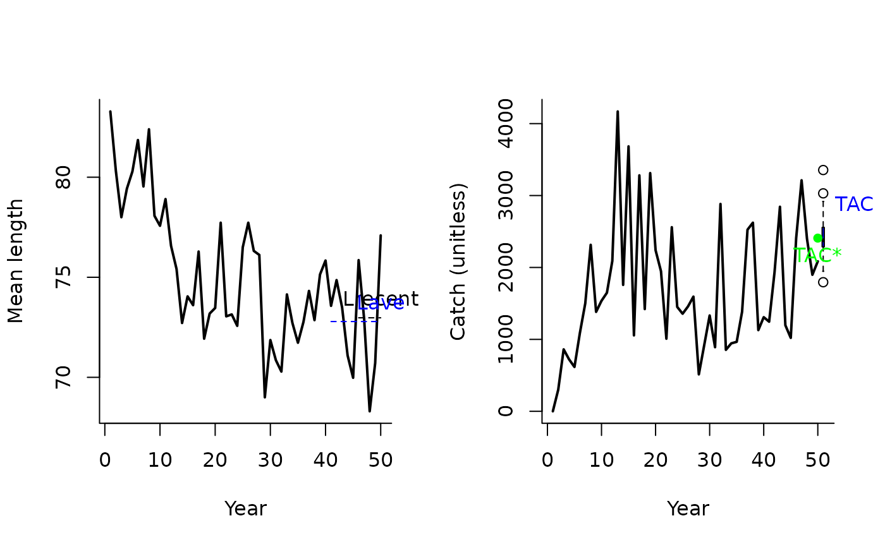
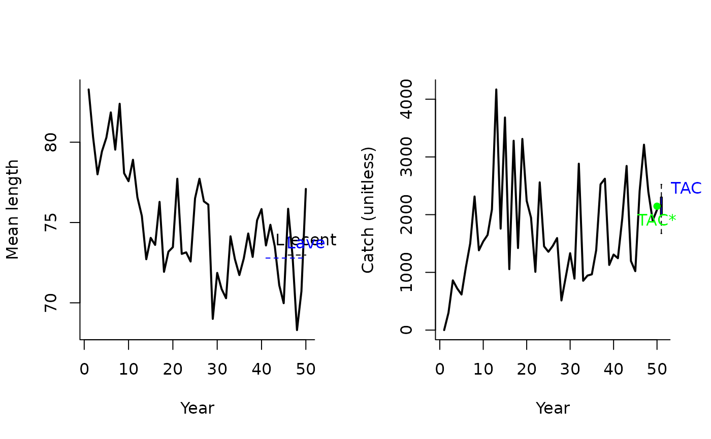
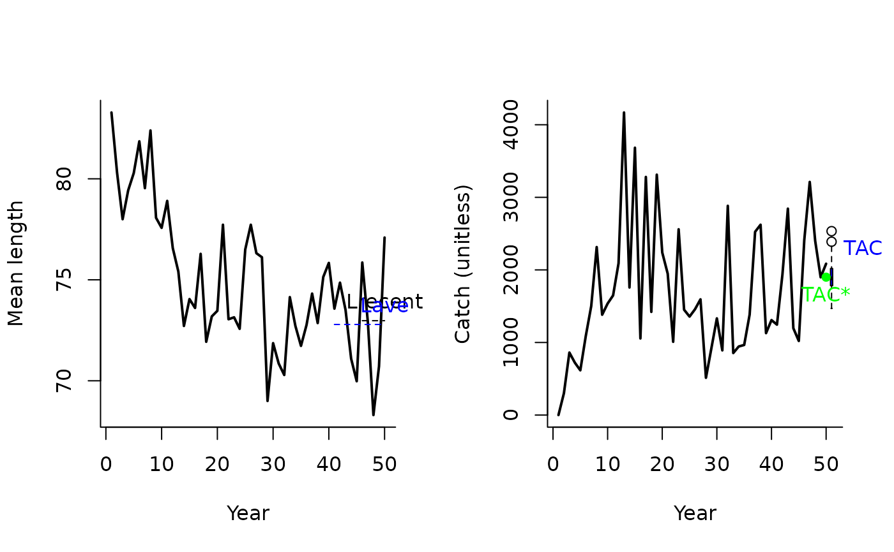
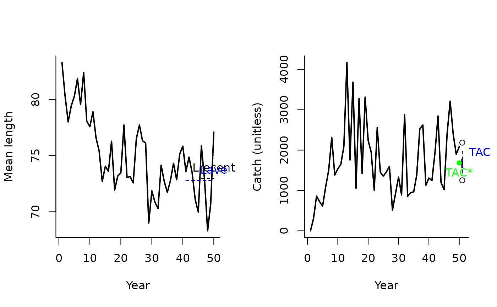

LstepCC1.RdA management procedure that incrementally adjusts the TAC according to the mean length of recent catches.
LstepCC1(
x,
Data,
reps = 100,
plot = FALSE,
yrsmth = 5,
xx = 0,
stepsz = 0.05,
llim = c(0.96, 0.98, 1.05)
)
LstepCC2(
x,
Data,
reps = 100,
plot = FALSE,
yrsmth = 5,
xx = 0.1,
stepsz = 0.05,
llim = c(0.96, 0.98, 1.05)
)
LstepCC3(
x,
Data,
reps = 100,
plot = FALSE,
yrsmth = 5,
xx = 0.2,
stepsz = 0.05,
llim = c(0.96, 0.98, 1.05)
)
LstepCC4(
x,
Data,
reps = 100,
plot = FALSE,
yrsmth = 5,
xx = 0.3,
stepsz = 0.05,
llim = c(0.96, 0.98, 1.05)
)A position in the data object
A data object
The number of stochastic samples of the MP recommendation(s)
Logical. Show the plot?
Years over which to calculate mean length.
Parameter controlling the fraction of mean catch to start using in first year
Parameter controlling the size of update increment in TAC or effort.
A vector of length reference points that determine the conditions for increasing, maintaining or reducing the TAC or effort.
An object of class Rec-class with the TAC slot populated with a numeric vector of length reps
The TAC is calculated as:
$$\textrm{TAC} =
\left\{\begin{array}{ll}
\textrm{TAC}^* - 2 S\textrm{TAC}^* & \textrm{if } r < 0.96 \\
\textrm{TAC}^* - S \textrm{TAC}^* & \textrm{if } r < 0.98 \\
\textrm{TAC}^* & \textrm{if } > 1.058 \\
\end{array}\right.
$$
where \(\textrm{TAC}^*\) is (1-xx) times average catch in the first year,
and previous catch in all projection years, \(S\) is step-size determined by stepsz,
and \(r\) is the ratio of \(L_\textrm{recent}\) and \(L_\textrm{ave}\)
which are mean length over the most recent yrsmth years and 2 x yrsmth historical
years respectively.
The conditions are specified in the llim argument to the function.
LstepCC1: The least biologically precautionary TAC-based MP.
LstepCC2: More biologically precautionary than LstepCC1 (xx = 0.1)
LstepCC3: More biologically precautionary than LstepCC2 (xx = 0.2)
LstepCC4: The most precautionary TAC-based MP.
See Data-class for information on the Data object
LstepCC1: Cat, LHYear, ML, Year
LstepCC2: Cat, LHYear, ML, Year
LstepCC3: Cat, LHYear, ML, Year
LstepCC4: Cat, LHYear, ML, Year
See Online Documentation for correctly rendered equations
Carruthers et al. 2015. Performance evaluation of simple management procedures. ICES J. Mar Sci. 73, 464-482.
Geromont, H.F., Butterworth, D.S. 2014. Generic management procedures for data-poor fisheries; forecasting with few data. ICES J. Mar. Sci. doi:10.1093/icesjms/fst232
LstepCC1(1, Data=MSEtool::SimulatedData, plot=TRUE)

#> TAC (median)
#> 2382.296
LstepCC2(1, Data=MSEtool::SimulatedData, plot=TRUE)

#> TAC (median)
#> 2169.149
LstepCC3(1, Data=MSEtool::SimulatedData, plot=TRUE)

#> TAC (median)
#> 1906.826
LstepCC4(1, Data=MSEtool::SimulatedData, plot=TRUE)

#> TAC (median)
#> 1671.134